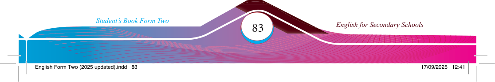

Did you
know
?
4. Rolling your eyes
5. Showing frustration
6. Talking to someone else
7. Yawning loudly
8. Appearing bored
9. Playing with objects
10. Facing away from the teacher
(b) How would you respond to the inappropriate non-verbal communication cues mentioned in A?
(c) Describe how different personal appearances may communicate different messages.
In communication, people often respond to non-verbal cues with non-verbal actions. For example, one might return a smile back to someone who smiles at them or adopt a polite expression if someone appears upset.
However, non-verbal cues alone may not be enough. People frequently use spoken language to articulate their understanding of these non-verbal cues. The combination of both verbal and non-verbal cues enhances the effectiveness of communication.
Responding to non-verbal communication is crucial to convey that we understand others’ thoughts and feelings, even when they are not speaking. Responding to non-verbal communication can signifi cantly improve our interpersonal relationships and overall communication skills.